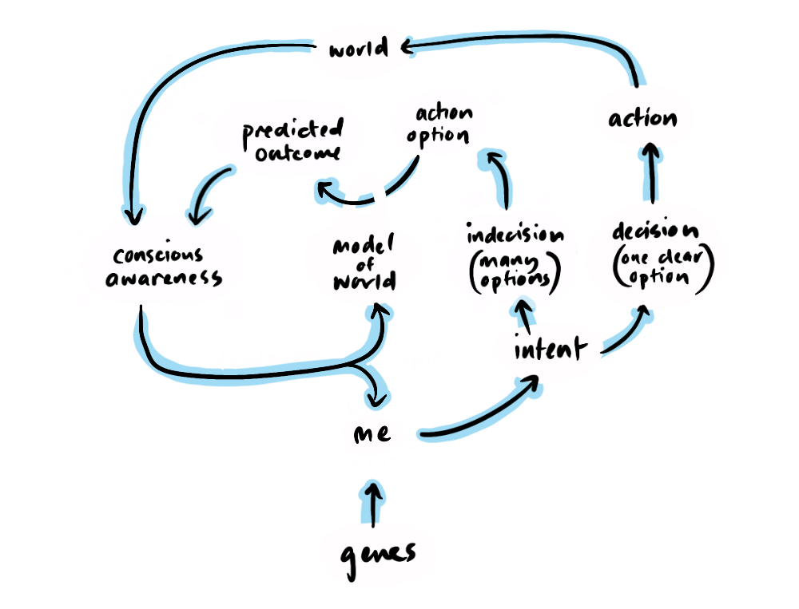

IMPLICATIONS
how conscious significance could inform our lives
CONSCIOUS SIGNIFICANCE
In a case for Conscious Significance, I outlined a framework for understanding our sense of autonomy, distinct from libertarian 'free will', that is determinism-agnostic and yet maintains all the important aspects of our conscious experience of autonomy. I clarified that acting with an acknowledgment of 'conscious significance' is not the same as acting as if we have free will—rather it is acting inline with an understanding that our conscious effort is significant to determining outcomes. At the end of that piece I promised to outline what, if any, consequences there would be for how we might want to operate in the world, given 'conscious significance'.
PARADIGM SHIFTS
Supplementary to this, I have also written a piece on paradigm shifts and how they change a lot less than we expect. This is important to keep in mind when considering the implications of a new philosophical framework, because often the lessons that such a framework might teach us have already been learned through cultural evolution, and new lessons may not be apparent immediately. In fact, simplistic lessons drawn prematurely that contradict cultural evolution may be disastrous. In the case of determinism, if you take it that you can do whatever you want because you have no other choice, then you may cause long-term misery for yourself and others.
SOME FINAL THROAT-CLEARING
The following is an exploration of what does and doesn't change in a world that might be deterministic, but where many of our norms carry an assumption of 'free will'. 'Conscious significance' distinct from 'determinism' and 'free will' has the capacity to maintain scientific integrity, without abandoning important norms. It has implications for how we deal with the extremes of behaviour, regarding prison reform, how we frame our internal lives—differentiating guilt and shame, and it can also inform our politics.
SO, WHAT REMAINS UNCHANGED?
While the position I'm putting forward is determinism-agnostic, for the sake of argument, I'm going to presume determinism, as this is the hardest position against which to test the implications for 'conscious significance'.
CONSEQUENCES
What could be more profound than finding out that none of what you do is your fault, but rather the inevitable consequence of a series of zillions of quantum operations? It seems to take us off the hook for a lot, right? But does this mean we can start lazying around doing nothing or even start committing crimes without consequence?
Not so fast...
None of this undermines consequences; in fact, determinism guarantees consequences and makes them somewhat foreseeable. It is precisely because of our intuitions about deterministic physics that we don't step out into traffic without looking, or like Margot Robbie in Barbie step off our 3rd story roof expecting to float gracefully to the ground. 'Conscious significance' means we are actively involved in foreseeing consequences when we loop through simulated actions in our mind and consciously experience the predicted outcome, enabling us to respond to more complex and novel situations.
YOUR FAULTS ARE NOT YOUR FAULT—BUT THEY ARE STILL YOUR FAULTS.
So, the consequences for individual behaviours remain... consequential. But what does that tell us about the humans that take these actions? Must we always take the progressive parental maxim of criticising the behaviour without judging the character of the child? Does this extend right through one's adult life? Can we draw any conclusions at all about us and others, based on our behaviour?
First, let’s acknowledge that under determinism, you are only "responsible" for your actions insofar as 'you' are the product of deterministic forces. Your intuitive sense of self didn’t create the underlying desires driving your actions, though it may consciously participate in shaping your personality through deliberate choices and varying levels of conscious effort.
Even if we recognize that shaping our personality involves effort, that effort itself stems from motivations beyond our control. If we accept this, it follows that your faults are not truly "your fault." I’m comfortable accepting this—but does the argument end there?
Not even close...
PAST IS PROLOGUE
If you know that someone has done something abusive or criminal, or habitually exhibits selfish or anti-social behaviours, then I would argue you can be forgiven for wanting to avoid that person or perhaps even wanting to punish them. That is because, our intuitive determinism tells us, past is prologue—past behaviours indicate underlying motivations that make future behaviours somewhat predictable.
In our children, we try to separate the behaviour from the child, because a child is developing their sense of identity, and tying a child's sense of identity to negative behaviour is a recipe for turning negative behaviours into a negative personality.

Now, people do continue to develop throughout adulthood, and there is some room for this philosophy to continue beyond childhood, but, at some point, consistent underlying motivations become evident in people's behaviour, and it is reasonable to expect relatively consistent behaviour to follow. So, while negative motivations may not be the fault of that person, in the sense that they did not cause them, they are never-the-less a fault that they have, in the sense that their behaviour consistently creates negative outcomes.
There is a reasonable response to this: Granting determinism, human behaviour is a result, in part, of environmental influences, but we (other humans) and our systems comprise a significant part of each individual's environment. So, there are two ways in which we can act so as to positively influence negative behaviours.
- The rational response: Create a system of incentives that encourage working together (like paid employment, households, social spaces, commerce) and deterrents (like fines, imprisonment etc) carrots and sticks, and importantly, rehabilitation systems.
- The irrational response: Natural emotional feedback from those around us, to our actions, is something that can come in expected and unexpected ways. Our expectations about how people will react to our behaviour can inform our conscious and unconscious decision-making, acting as a deterrent to anti-social behaviours. Unexpected feedback can inform our internal model of the world, which, in turn, informs future decisions. The predictability of other people's instinctive behaviour may be responsible for more social cohesion than we appreciate. Take online behaviour for instance, this is not modulated by the physical cues of the people around us and the results are often ugly, the sense of "er, this is getting uncomfortable" has little purchase online.

So, to say someone is just a result of their environment, does nothing to argue that we, as a part of their environment should not form part of the consequences of their actions. A man who begins beating his wife in a supermarket should expect that the other people surrounding him will intervene.
FAULT AND RESPONSIBILITY
The great philosopher Will Smith, renowned for his willingness to take responsibility... expresses the point I want to make in this clip that delineates between fault and responsibility.
It don't matter who's fault it is that something's broken, if it's your responsibility to fix it. For example, it's not somebody's fault if their father was an abusive alcoholic, but it's for damn sure their responsibility to figure out how they're going to deal with those traumas and try to make a life out of it.
In this framing, responsibility is about your response to what happens to you. This is where 'conscious significance' comes into play. To some degree, our conscious deliberation and effort allows us to decide from a limited number of options, and through conscious effort, alter a negative path. This means that, once we recognise, or someone in our environment reveals a positive option, we are somewhat empowered to take personal responsibility.

But, let's not get ahead of ourselves...
PERSONAL RESPONSIBILITY IS PERSONAL
Due to our genetic and environmental history, we are not all availed the same conceptual options to which we can apply our conscious effort. So, successful self-determination might be much easier for one person than another, and it may be impossible for some.
None of us know what efforts someone else is making in order to better their situation. Even on the extremes, it's believable that an idle homeless person is struggling to psychologically make it through the day, and equally we can imagine that a gold medal-winning athlete is compelled towards excellence, blinkered by obsession to other concerns so much so that their conscious effort is actually comparable to the homeless person.
We cannot know how much conscious effort someone else is putting in. But that doesn't get us off the hook, because we do know how much conscious effort we are putting in. This is why I advocate for a positive double standard which is to essentially hold myself to account for my level of cognitive effort, but not to hold others to account for theirs, because I cannot know the level of their conscious efforts in order to account for their effort. So, personal responsibility, is just that, "personal".

CONSCIOUS EFFORT IS A KEY DETERMINANT OF AUTONOMY
From the perspective of 'conscious significance', although one can only know how much effort they themselves are putting in, conscious effort is the a key determinant in someone's ability to change, to improve their situation and their relationships with others. This is because, regardless of one's starting point, someone who openly seeks out new information and processes it effortfully, is more likely to find productive options, making them better able to get what they want and to adapt to the needs of others.
People who don't do this appear stubborn, small-minded and unreasonable, and so judgement of people who are more or less adaptable is, I would argue, inevitable because these attributes are really annoying. This judgment is a protective instinct that keeps us safe from people who are likely to have a negative impact on our lives, and sometimes avoidance is the best reaction, but 'conscious significance' leaves the door open to changing someone's mind.
DOES GREATER AUTONOMY DICTATE MATERIAL SUCCESS?
I think it's important to mention here that when I'm talking about autonomy and self-determination, I'm not talking about material success. There are multiple factors that go into gaining wealth that have nothing to do with personal autonomy. There are very smart people with a great deal of autonomy, open minds, humour, and wonderful relationships who have very little money. In fact, a capacity to appreciate one's life without conventional metrics might even be a sign of greater autonomy.
Beyond survival-level sustenance, material wealth provides largely superficial options.
IS GREATER AUTONOMY THE GOAL?
Not necessarily, there are many areas of your life where your automatic processes benefit your life, when being a predictable driver, when being a reliable parent, when keeping a healthy diet. The lowest autonomy we might consider is at the cellular level, where cells act so reliably and so predictably that entire systems (like humans) can be built on top of them—their reliability is exactly what enables the smooth functioning of the emergent organism.
Our own habits are a sort of abdication of autonomy, and yet they can be very positive. Being "in flow" in a game, or during a creative pursuit, can also be seen as a low-autonomy mode.
On the other hand, these low-autonomy states are rarely memorable, often you reach your destination, or finish your creative goal and time has completely passed you by—which is sometimes desirable. But if we don't want our whole lives to pass us by, engaging with the world in a more deliberate way might make us more present, and make our memories more vivid. This can be a conscious choice to pay attention—finding the novelty in the mundane, and it can also be evoked by unfamiliar environments. Also, placing ourselves outside our comfort zone can force us into a more present state, and by making a wider range of fresh options available to us, leads us to more deliberate decision-making.

CHANGING MINDS
While I can't know how much conscious effort one is putting in, I can know if someone's conscious effort is poorly directed, causing anti-social behaviour, but my only way to address that is to try and help direct their thinking in a more positive direction. This might be through, on a macroscopic level, voting for better systems of social support. On a personal level it might be helping them talk through an issue, or on a physical level, in the case of the abusive husband in the supermarket, it might be punching them in the face—which begs the question, just how do we deal with crime, within such a philosophical framework?

PRISON REFORM
This brings us to one of the big issues for determinism. Prison Reform is seen as a natural byproduct of determinism—if we can't hold others responsible for their actions, then we have no right to imprison them. A determinist can always refute themselves by saying "but we are equally powerless not to follow our instincts and imprison them". I see this as a rather glib, even silly point, because, part of what determines what you do is your knowledge, and gaining knowledge of determinism can determine that you do something differently now than you did before acknowledging determinism.
DATA OVER DETERMINISM
What I would prefer to argue is that, yes, there are specific ways in which we might reform prisons, and acknowledging determinism may help us to look more objectively at the justice system, but regardless, that system needs to have measurable results in order for it to have any utility. So, prison reform should be based on data about what leads to the best outcomes for victims, society, and the criminals themselves, regardless of determinism.
This relates to my earlier post that often paradigm shifts don't change a lot, because before acknowledging an underlying philosophical shift, approaches will have emerged through practical utility. We see data-driven prison reform happening in the world already (albeit slowly) without a universal adoption of determinism, because such reforms have been measurably successful and therefore adopted. We also see the opposite, where traditional, religious, and conservative ideologies maintain a punitive, retributive motivation for the prison system.

WHAT DOES DATA-DRIVEN PRISON REFORM LOOK LIKE?
Let's begin by listing the reasons that might motivate imprisonment. As mentioned, there is retribution and punishment, but there is also public safety, the deterrent effect, and the opportunity for rehabilitation. As I see it, apart from retribution and punishment, the other reasons stand, even in a deterministic universe.
Because 'conscious significance' holds that people do have some capacity to learn and adapt, and there is evidence that rehabilitation can work, rehabilitation should be the key driver within prison environments. In a deterministic universe, prisoners are also victims—of their genes and environment, and in the data they are often literally victims of crime themselves. This data bears out some level of determinism in criminality, regardless of one's philosophical worldview. So, it stands to reason that re-traumatising inmates is only going to exacerbate recidivism.
However, this does not mean a mindfulness resort is necessarily the right approach either. In fact, some meditation programs in prisons have been found to backfire due to the particular nuances of traumatised brains. Researchers led by clinical psychology professor June P Tangney noted that…
“This level of non-judgment and acceptance may not be as beneficial for people suffering from externalising disorders marked by higher levels of impulsivity. Externalising disorders are common among an incarcerated population who may benefit from some self-scrutiny in reducing patterns of criminal thinking and behaviour”.
This is not to say that kindness is not in order, either, only that applying a metaphysical philosophy to this problem is not necessarily going to be as effective as simply looking at the data and measuring the effectiveness of prison reform by the results.
GUILT & SHAME
Prison reform deals with human behaviour at one extreme in society, but what do we do internally with our own regretful actions? Brené Brown makes the case that guilt and shame are not mere synonyms.
I believe that there is a profound difference between shame and guilt. I believe that guilt is adaptive and helpful—it’s holding something we’ve done or failed to do up against our values and feeling psychological discomfort.
I define shame as the intensely painful feeling or experience of believing that we are flawed and therefore unworthy of love and belonging—something we’ve experienced, done, or failed to do makes us unworthy of connection.
I don’t believe shame is helpful or productive. In fact, I think shame is much more likely to be the source of destructive, hurtful behavior than the solution or cure. I think the fear of disconnection can make us dangerous.
A way in which I've understood Brené Brown's conception of guilt and shame, is by recognising that someone who steals some money out of necessity may feel guilt, because they know they were responsible for a crime, and they can run simulations in their mind about how they could have achieved what they needed differently, and this is useful for informing their future choices. On the other hand, someone who is the victim of sexual abuse might feel shame, without any logical responsibility, and running simulations in their mind only serves to further traumatise them, because acting differently wouldn't necessarily have protected them against the choice another person made.
In the same way, someone who is part of a group can feel ashamed because of that group's actions. I feel shame, as a white male, when 74% of white males in the US vote for Donald Trump, but I don't feel guilt, because I am a NZ citizen and couldn't vote, and wouldn't have voted that way if I had been able to. But the feeling that people might be justified in judging me based on an assumption that most white males back Trump is a form of feeling unworthy of love—shame as Brené Brown defines it.
These examples are ways of illustrating guilt and shame's separability, but there are also many cases where guilt and shame will overlap. A domestic abuser, for instance, might feel regret, guilt, and shame all at once after hurting a family member. I would argue that even with this person it is still worth separating guilt and shame. After all, what happens if this domestic abuser focuses on guilt? Well, they might find a way to try to repair their relationships, and simulate different possible behaviours, but if they focus on their shame, they actually reinforce their identity as a domestic abuser, making them more likely to repeat the offence.
So, while a naive interpretation of determinism might suggest that we should do away with guilt, I would agree with Brené that what we want to do away with is actually shame. Guilt prompts productive conscious effort, and is therefore consistent with 'conscious significance'.
POLITICS
We have covered the extreme example of prison reform, and the general approach of guilt and shame, but it is also important to cover each of our roles as a political individual. I find political alignment maps neatly onto one's position on determinism with determinists on the left (we are the result of luck, and it’s therefore fair to redistribute wealth, and rehabilitate victims of circumstance) and free will libertarians on the right (we are responsible for our individual actions and should be differentially rewarded or punished for them). This intuition of mine is borne out by the scientific literature.
... exposure to scientific explanations for patterns in human behavior challenges the notion of personal autonomy and, in turn, undermines libertarian arguments against state paternalism appealing to autonomy and personal choice.
A philosophy of 'conscious significance' acknowledges that our conscious effort is significant in determining outcomes, which somewhat validates our sense of personal autonomy. However, it also acknowledges that our autonomy is limited by genes and experience and that we cannot know how much conscious effort another human being is putting in, meaning that our own sense of autonomy cannot be projected onto others, in a political sense.
So, while 'conscious significance' recognises personal autonomy, meaning we are not powerless to change our situation (the paradox of determinism), it also asserts a positive double standard that holds that we cannot expect other individuals and populations to be able to pick themselves up by their bootstraps (the paradox of free will). This is still probably a more left-leaning political philosophy. It does allow for deliberate change, but acknowledges that the environment needs to change for populations to change, rather than the other way around.
SO...
A determinism-agnostic philosophy of 'conscious significance' means chiefly that your conscious effort is paramount, and your conscious experience is relevant to determining outcomes. In this approach you are not a magical soul that can self-create its own motivations, but you are also not a passive observer of an illusory experience that is inconsequential to your actions. Your conscious mind does take in information from the outside world, which informs your model of the world somewhat automatically, but when you feel like you are making a conscious decision, you are actually making a conscious decision—by cycling through logical options until you find a satisfactory action. This deliberate decision-making requires your conscious involvement; it is a miracle of evolution, not merely a byproduct.
WHAT DOES THIS PHILOSOPHICAL APPROACH CHANGE FROM ONE BASED ON FREE WILL?
Most importantly, determinism-agnostic 'conscious significance' makes a difference to how we judge others—by acknowledging that we cannot know the level of someone else's conscious effort, we cannot accuse someone else of not putting in as much conscious effort as we are. I suggest that therefore we employ a positive double standard where we take responsibility for our own level of effort, but don't place blanket expectations on others.
This extends to prison reform, where we should focus our energies on effective rehabilitation—under 'conscious significance' rehabilitation can be effective. On the other hand, in our internal lives, distinguishing between useful guilt and deleterious shame enables us to turn negative actions into positive behaviours in the future.
In terms of politics, this philosophical approach is more aligned with a left-leaning political philosophy, where systems
WHAT DOES THIS PHILOSOPHICAL APPROACH NOT CHANGE FROM ONE WITH FREE WILL?
Even though we can only measure our own level of conscious effort, doing so empowers us to put in more effort or redirect that effort if we so choose, so 'conscious significance' means a sense of autonomy remains intact without the need for it to be literally "free".
We can still notice patterns of behaviour in others that we want to avoid or in some cases resist—resistance means being an influence on another's behaviour by being part of the environment that influences their future choices. So, judgment becomes less about ascribing positive or negative values, and more about judging the appropriate response to behavioural patterns—under 'conscious significance' behavioural patterns can still be changed.
There is still a role for prisons, in order to keep the public safe during rehabilitation, and to act as a deterrent. And there will still be a place for conservative or right-wing political thought so as not to throw out the baby (of time-tested high-utility features of traditional practices) with the bathwater (of the traditions themselves).
SO... AGAIN
Throughout history, humans have made profound discoveries about the nature of reality, but as I've explained, these paradigm shifts are often more gradual than a fleeting moment of revelation, meaning many of the lessons that such discoveries could teach us have already been learned through cultural evolution, and new lessons may not be apparent immediately. In fact, simplistic lessons drawn prematurely that contradict cultural evolution may be disastrous. If you take from determinism, for instance, that you can do whatever you want because you have no other choice, then you may cause long-term misery for yourself or others.
The framework of 'conscious significance' seeks to provide a logical pathway between a potentially deterministic mind and many of the aspects of 'conscious experience' we feel are important as human beings, which have, in the past, been associated with 'free will'. In this essay on the implications, I have sought to show that, from the perspective of 'conscious significance', much of our cultural norms remain intact, even if the world is deterministic. But in the same way as the framework is differentiated from free will, 'conscious significance' also allows us to take a subtly different perspective on personal responsibility and other related issues; prison reform, shame vs guilt, and political alignment. This is not to negate personal responsibility outright, but to emphasise the personal nature of it, because each person is only able to assess their own level of conscious effort.
Acknowledging the gradual nature of change during a paradigm shift means we should be patient, and sit with a new belief for a while, to see how it applies. I've found this a useful process to go through over the last few years while I've been grappling with the potential that everything could be determined. This approach allows for the same sort of data-driven reform (on a personal level) that I advocate regarding prison reform. Logical frameworks are all well and good, but they're not very useful if they don't pass empirical testing. 'Conscious significance' is my closest approximation to a logically coherent response to the possibility of determinism that aligns with important cultural norms and avoids absurdities.
I hope you find it helpful.